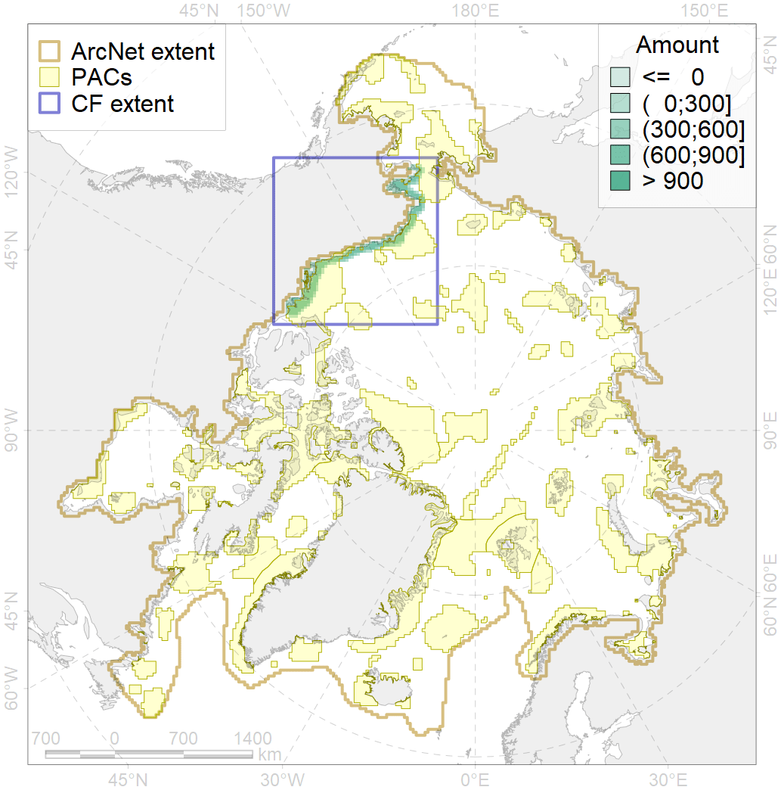
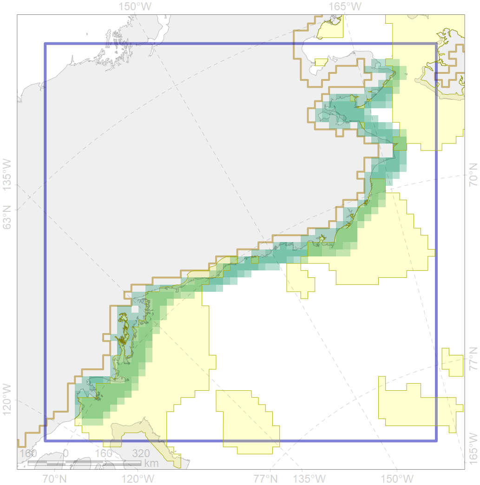

4022

| CF code | 4022 |
| CF name | Feeding area of the Inconnu (Stenodus leucichthys nelma), American populations |
| Time Period | 1950-2010s |
| Source(s) | Scott, Crossman, 1973; Coad, Reist, 2018 |
| Seasonality | June-October |
| Depth Horizon | 0-60 |
| Methodology | Compiled from literature sources based on field observations |
| Use Restrictions | Open access |
| Author Name | N. Chernova |
| Notes | |
| Scenario’s Target | 0.324 |
| Target Achievement | 0.531 (Scenario: 163.8%) |
| PAC | Share of the Total Amount within the PAC | Share of the Target Achievement for the ArcNet | PAC’s Contribution to the Target Achievement |
|---|---|---|---|
| 5 | 4.0%4.4% | 6.3%6.8% | 3.9%4.1% |
| 6 | 0.3%0.8% | 1.0%2.4% | 0.6%1.4% |
| 60 | 14.1%15.7% | 33.5%35.5% | 20.4%21.6% |
| 61 | 0.5% | 1.7% | 1.0% |
| 62 | 36.4%38.5% | 105.8%108.5% | 64.6%66.3% |
| inner | 55.4%59.9% | 148.3%154.8% | 90.5%94.5% |
| outer | 44.6%59.6% | 15.5%48.7% | 9.5%29.7% |
| † supplement values are for area consistence whereas principal values are for Accenter compatible gridded stats |